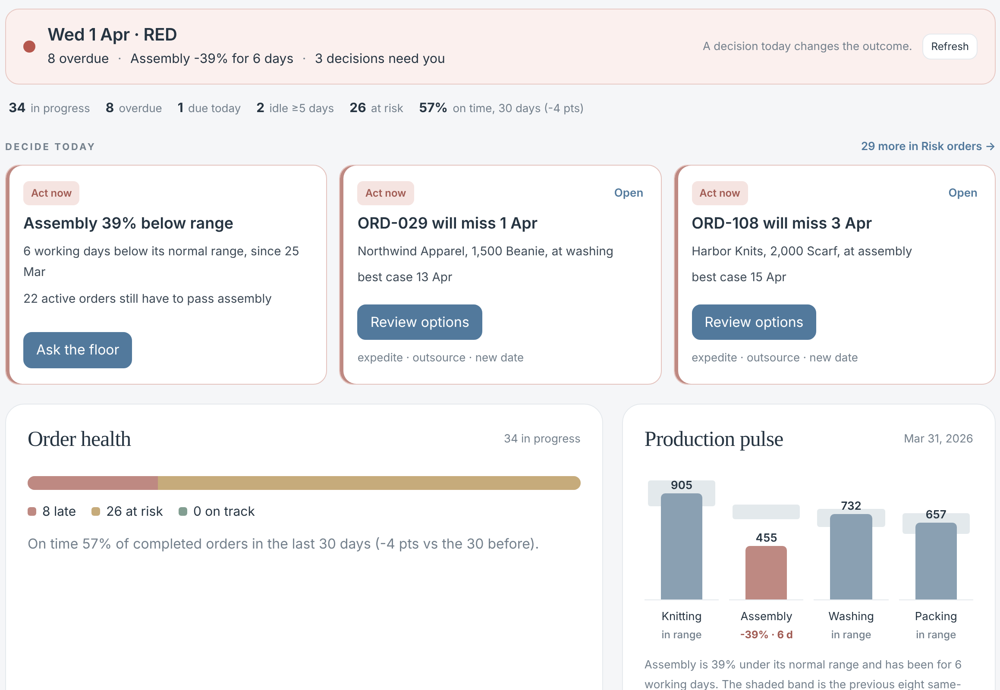

Date, colour, three facts, set by the same rules as the alert emails.
One button each: ask the floor, review options, confirm a new date.
Late, at risk, on track; every number opens its rows.
Planner time: 73 → 11 hours a month (Sprint 1 simulation)
ThreadPilot · Group 19 · 7